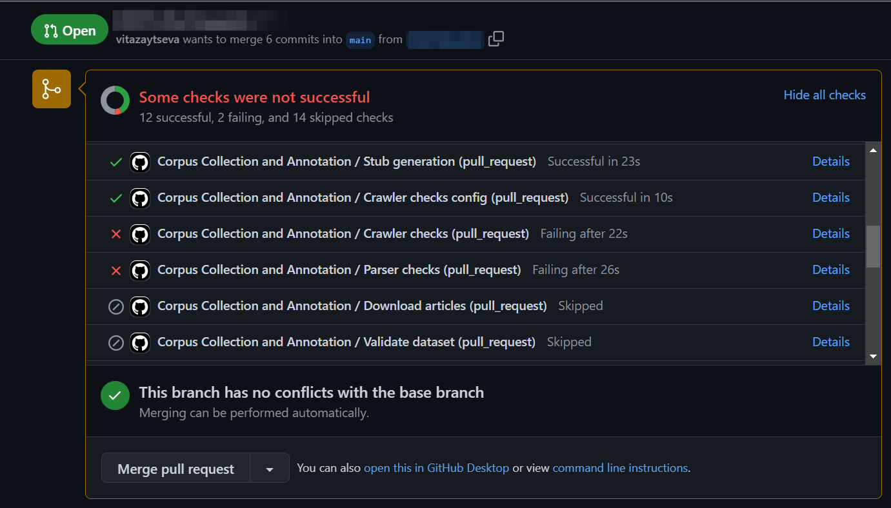
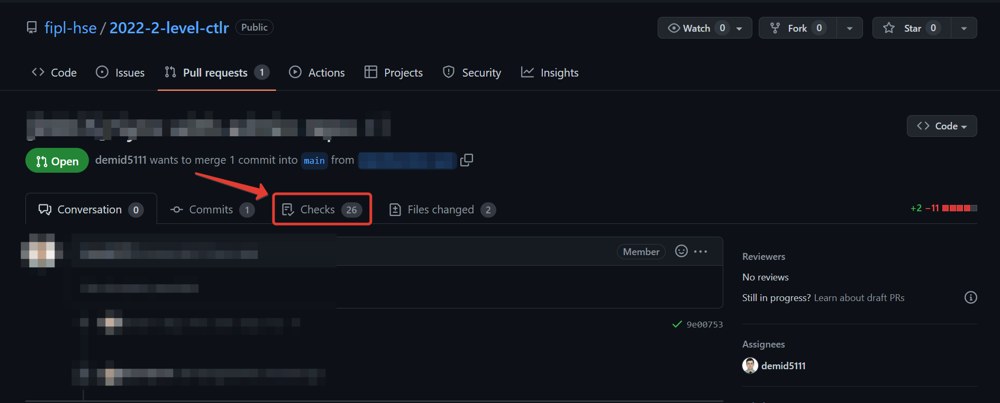

Working with tests: locally and in CI
Tests configuration in Visual Studio Code
To configure tests locally you need to perform several steps:
Install tests dependencies:
python -m pip install -r requirements_qa.txt
Important
Ensure you have activated your environment
if you have such by running .\venv\Scripts\activate
(Windows) or source venv\bin\activate (macOS).
Create a new configuration:
To create a new configuration open the Testing tab on the side bar of Visual Studio Code and press the Configure Python Tests button.

Alternatively, you can open configuration settings via command bar. Use Ctrl + Shift + P keyboard shortcut to open it and type in Python: Configure Tests.

Choose
pytestas a target:
Choose the directory to run all tests. You can use root directory to run all tests or a specific lab.

When you are done, the settings.json file for the tests will be opened and all the tests will be displayed on the Testing tab of the Visual Studio Code.

Running tests in Visual Studio Code
To run the test, press the run button, as indicated in the screenshot above.
As you have some tests failing, you want to run them separately. You can press a run button next to a test you want to run in the tests files specifically or in the Testing tab.

Debugging
When you want to debug a test, execute debugging by clicking a run button with a bug on it on a test you want to run in the Testing tab or make a right click on the testing button in the test file itself and choose the Debug Test option.

To debug you should put a breakpoint in your code or in the test itself. Breakpoints are red dots that you can put at the potentially vulnerable place of code. The execution stops at breakpoints and you can debug your code from these lines.

Running tests in terminal
Important
Ensure you have activated your environment and installed all required dependencies.
To run all tests, execute the following command in the terminal:
python -m pytest
You can also run tests for any of the allowed marks:
mark4, mark6, mark8 or mark10.
python -m pytest -m mark8
To run tests for a specific laboratory work you can add the directory name after pytest command. For example, if you want to run tests for lab_1_keywords_tfidf and mark 4, the full command and the full terminal output should look like this:

Hint
- Note that if you activated virtual environment and installed
requirements properly, you can use pytest without calling
python -m first.
Running tests with the start button
As well as running tests in command-line, you can run them with the triangle-shaped start button. For that, go to the abovementioned Testing tab on the side bar of Visual Studio Code. The button appears at the right side of the laboratory work’s name when the cursor is hovered over it.

Initially, when pressing the button, all tests in that laboratory
work are run, regardless of their mark.
To do that for the particular mark (and the particular laboratory work),
go to the .vscode\settings.json and change the value of the
python.testing.pytestArgs key. By default, "." is set.
Instead of it, you should place the laboratory work’s name,
"-m" flag and the desired mark in the list. See the example below:
{
"python.testing.pytestArgs": [
"lab_4_auto_completion",
"-m", "mark10"
],
"python.testing.unittestEnabled": false,
"python.testing.pytestEnabled": true
}
Running tests in CI
Tests will never run until you create a Pull Request.
The very first check happens exactly when you create a pull request. After that, each time you push changes in your fork, CI check will be automatically started, normally within a minute or two. To see the results, navigate to your PR and click either the particular step in the report at the end of a page, or click Checks in the toolbar.
 Inspect each step by clicking through the list to the left.